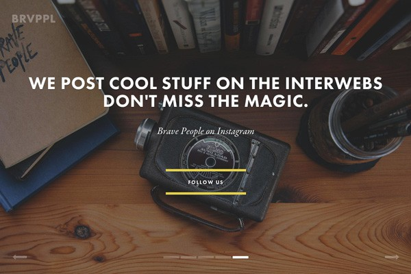
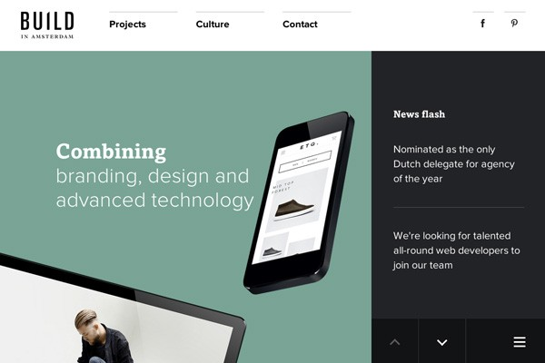

El diseño web es una industria que cambia cada día, llena de vitalidad y muy variada. Pero el diseño de un sitio web no es un producto final; es más bien la presentación del producto, la conexión entre personas, una herramienta o un servicio.
Después de ver más de 500 sitios web en la serie semanal «Los sitios web más creativos de la semana» de Despreneur, he percibido aproximadamente la situación actual del diseño web y su rumbo el próximo año. En este artículo, comentaré el estado actual del diseño web y predeciré algunas tendencias para 2015.
Todas las suposiciones y conjeturas aquí hechas provienen de mi investigación y experiencia en la industria del diseño durante 2014. Puede haber aciertos y errores; si creen que este artículo aún tiene aspectos por mejorar, sinceramente espero poder discutirlos con todos ustedes.
Fotografía de elementos naturales
La fotografía de elementos naturales fue muy popular en 2014, y creo que mientras este colectivo continúe tomando hermosas fotos al amparo de la licencia de «hacer lo que quieras», esta tendencia podrá continuar.
Brave People

Dominio del monocromo
En el futuro veremos más sitios web que utilizan abundantemente el monocromo. Fondos, tipografías, superposiciones de imágenes, botones. El monocromo intenso puede resaltar lo importante, hacer que la interfaz sea impresionante y también facilitar la asociación de la marca con el color.
Nine Sixty

Fondo de video
El fondo de video es la experiencia definitiva para transmitir emociones e intenciones, mucho más potente que las imágenes. Vimos que esta tendencia creció rápidamente en 2014, pero su verdadero pico será en 2015.
BORN

Startup Framework

Menús de navegación únicos
Guiados por los menús flotantes y fijos, veremos soluciones de navegación más creativas. Deslizar hacia abajo, hacia arriba, ventanas emergentes, énfasis en imágenes, información secundaria y animaciones, todo ello contribuye a lograr una experiencia de navegación memorable.
Impossible Bureau

Qards

Tarjetas y mosaicos
El diseño de tarjetas o mosaicos mantendrá su impulso en 2015. Mientras Pinterest siga liderando esta tendencia de diseño, veremos surgir como hongos más blogs y sitios de comercio electrónico que utilizan esta técnica.
Firebox

Elementos fijos
Ya estamos acostumbrados a las barras para compartir y a los menús de navegación fijos. Pero en 2014, los diseñadores demostraron que otros elementos, como las barras laterales, también pueden fijarse y funcionar bien. En 2015 veremos más sitios web que utilizan elementos fijos.
Build in Amsterdam

Sutil parallax
Una de las tendencias de diseño que causa amor y odio a la vez. Recientemente hemos visto muchos sitios web que siguen esta tendencia; desafortunadamente, desde el punto de vista de la experiencia de usuario, un exceso de parallax puede arruinar el diseño y perturbar la experiencia general. En 2015 veremos más desplazamientos parallax sutiles y efectos de animación que añaden una sensación de alta calidad y elegancia a los sitios web.
Cher Ami

Desplazamiento prolongado
En 2015, el desplazamiento continúa. Según «Everybody Scrolls» de Rebecca Gordon de Huge y otros nuevos estudios, a todos les encanta la función de desplazamiento. La narración digital de historias no puede prescindir de la experiencia consistente y del flujo de uso fácil y conveniente que proporciona el desplazamiento, por lo que las páginas largas de una sola página, llenas de interacciones y transiciones, dominarán el próximo año.
Smart Water

Ilustración
Todos conocemos el sitio web icónico Dropbox, que utiliza ilustraciones dibujadas a mano. La ilustración siempre ha sido una parte importante del diseño web, pero en el nuevo año veremos más ilustraciones maravillosas integradas en las experiencias web para promocionar marcas, contar historias o conectar con los visitantes.
One Design Company

Big data / Imágenes
La importancia del big data en la industria tecnológica y en el diseño web crece cada día. En 2015 veremos más imágenes, iconos y predicciones de datos interactivos. Este contenido parece sofisticado y confuso, pero al mismo tiempo es hermoso y atractivo.
Personal Brand Institute

Primero el producto
Ahora hay muchas startups que crean productos físicos, pero mostrar en una página web la experiencia y la sensación de un producto tangible es mucho más difícil que fabricarlo. Sin embargo, en el próximo año surgirán más experiencias 3D interactivas que permitirán a los visitantes mover el producto para observar incluso los rincones más pequeños.
My Deejo

El diseño plano continúa
A medida que el diseño plano ha sido adoptado rápidamente por muchas grandes empresas tecnológicas, muchos diseñadores ya se han pasado al plano sin pensarlo. Aunque esta tendencia es aún novedosa, en 2015 sin duda aparecerán nuevas direcciones del diseño plano.
Pennies

Móvil primero
El número de usuarios de Internet móvil crece rápidamente, y la filosofía de «móvil primero» también crecerá de forma imparable en 2015. El diseño receptivo ya no es solo una característica, sino que se ha convertido en una necesidad. Para ofrecer la mejor experiencia a los usuarios móviles, los diseñadores deben replantearse su enfoque al diseñar sitios web.
Medium

Toque humano
Las ilustraciones y tipografías dibujadas a mano han existido durante un tiempo. Ahora los sitios web pueden soportar casi todo tipo de fuentes, y con este respaldo, los diseñadores están aprovechando al máximo las fuentes manuscritas para transmitir una apariencia y sensación de toque humano, conectando con los visitantes de una manera nueva.
Adventure

Microexperiencias
Aquí se refiere a los microtextos y pequeños detalles en el diseño y la interacción que hacen que los usuarios se sorprendan gratamente. Imágenes y expresiones divertidas, funciones ocultas, datos inteligentes y humanizados, etc. En el nuevo año veremos más elementos inteligentes surgir en el diseño web.
Virgin America

Virgin America: al ingresar el apellido muestra «Hola», al ingresar el nombre muestra «Buen nombre». Fuente:Little Big Details.
Geometría
Sí, se trata de la geometría de las matemáticas, pero si se usa bien, la geometría no tiene por qué ser tan aburrida como las matemáticas. Las hermosas formas y estilos geométricos impactarán el escenario del diseño web con más fuerza en 2015.
Letters

Texto grande y audaz
Este año hemos visto muchos titulares enormes, y esta tendencia continuará en 2015. La razón es simple: el texto gigante es práctico y eficaz, y puede impresionar a los visitantes. Parece que los eslóganes gigantes estarán de moda por un tiempo. Simplemente directos, contundentes y efectivos.
Webflow

El auge de los generadores de sitios web
En 2014 fuimos testigos de cómo los generadores de sitios web intentaron reemplazar a los diseñadores y programadores humanos, pero con malos resultados. En 2015, también veremos más sitios web sorprendentes y de alta calidad creados con generadores (como Generator, Squarespace, Macaw, Webflow y Froont).
Squarespace

Marca personal
La importancia de la promoción de la marca personal se hace cada vez más evidente. Diseñadores, ingenieros, blogueros y empresarios se esfuerzan por construir una marca personal sólida en línea para aumentar su credibilidad y reconocimiento. A continuación veremos más sitios web centrados en la persona.
Tobias van Schneider

El diseño Material continúa evolucionando
El diseño Material fue inventado por Google; es una variación sutil del movimiento de diseño plano, pero más refinada, coherente, versátil y prometedora que el plano. En 2015 sin duda veremos el fuerte auge del uso del diseño Material.
Inbox by Gmail

Viajes interactivos
La exposición de las experiencias digitales interactivas será mayor. Cada vez más sitios web interactivos están creando experiencias únicas y personalizadas mediante el uso de efectos de sonido, la conexión con cámaras y teléfonos móviles, y permitiendo la interacción y la narración según las acciones del espectador.
Echoes of Tsunami

Conclusión
En general, las tendencias actuales se desarrollarán y evolucionarán aún más. El diseño plano, las tipografías grandes y las imágenes de alta calidad seguirán siendo el centro de atención. Al mismo tiempo, esperamos ver qué aportarán las nuevas tecnologías y las tendencias de diseño que ya no son populares al escenario del diseño web en 2015.
Pero en cualquier caso, los nuevos cambios aparecerán con seguridad, porque el cambio, igual que en la vida humana, nunca se detiene en el campo del diseño.
Fuente: http://www.shejipai.cn/web-design-trends-2015.html
Haz clic para compartir notas
<p style="font-size:14px;">¡La nota debe ser una extensión del contenido de este artículo!</p><br> <p style="font-size:12px;"><a href="../tougao.html" target="_blank">Para enviar un artículo, haga clic aquí</a></p> <p style="font-size:14px;"><a href="./runoob-user-test-intro.html" target="_blank">Cómo obtener el código de invitación de registro</a></p> <h3 class="text-muted"><i class="fa fa-info-circle" aria-hidden="true"></i> Antes de compartir notas, debes <a href=".." class="runoob-pop">iniciar sesión</a>.</h3> <p><a href="./runoob-user-test-intro.html" target="_blank">Cómo obtener el código de invitación de registro</a></p>